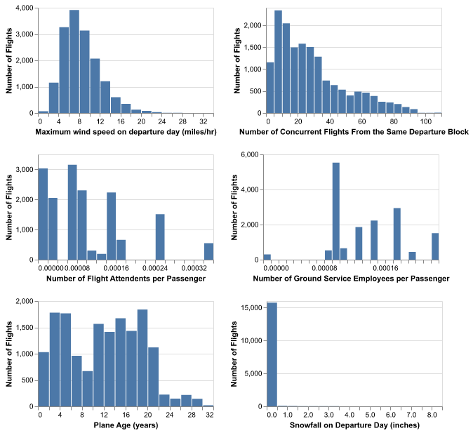
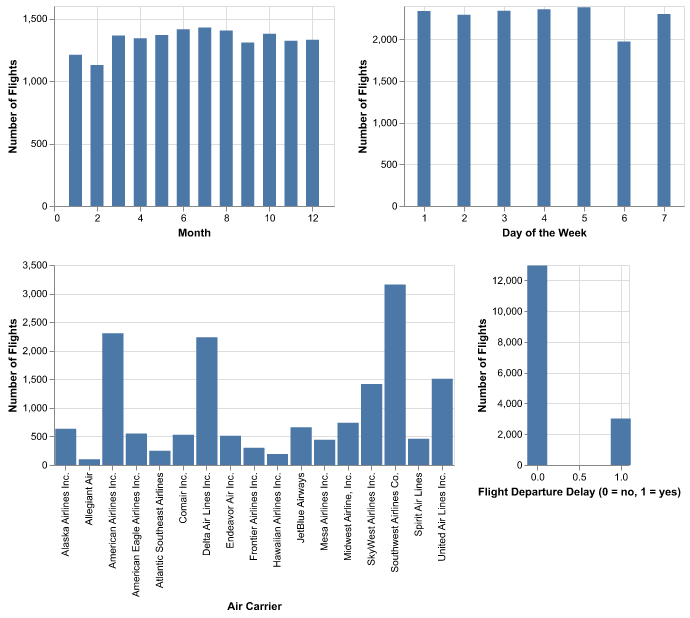
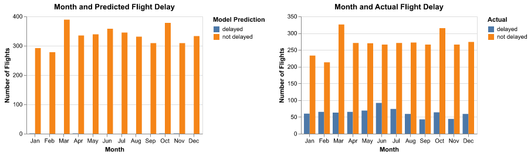
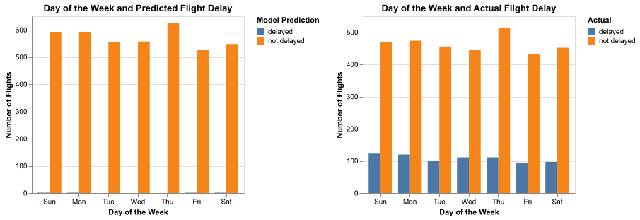

| MONTH | DAY_OF_WEEK | DEP_DEL15 | CONCURRENT_FLIGHTS | CARRIER_NAME | FLT_ATTENDANTS_PER_PASS | GROUND_SERV_PER_PASS | PLANE_AGE | SNOW | AWND |
|---|---|---|---|---|---|---|---|---|---|
| 8 | 4 | 0 | 31 | United Air Lines Inc. | 0.000253804 | 0.000228985 | 18 | 0 | 8.28 |
| 6 | 7 | 0 | 20 | United Air Lines Inc. | 0.000253804 | 0.000228985 | 17 | 0 | 12.53 |
| 4 | 5 | 0 | 64 | American Eagle Airlines Inc. | 0.000348408 | 0.000106867 | 15 | 0 | 14.32 |
| 6 | 7 | 0 | 27 | American Airlines Inc. | 9.82083e-05 | 0.000177287 | 2 | 0 | 12.53 |
| 11 | 6 | 0 | 57 | United Air Lines Inc. | 0.000253804 | 0.000228985 | 21 | 0 | 6.26 |
Analysis and Prediction of Airline Delays in 2019
Summary
In this project, we delve into a 2019 airline delays dataset to dissect the intricate factors contributing to flight disruptions. Our analysis aims to address pivotal questions, such as what are the primary drivers behind flight delays and cancellations? Are certain airlines or airports more vulnerable to these disruptions? How do external factors like adverse weather conditions or air traffic congestion exacerbate flight schedules? While previous studies have touched upon aspects of flight disruptions, we endeavor to provide a deeper understanding through the lens of analytical techniques, including descriptive statistics, data visualization, and machine learning algorithms (specifically KNN classification).
Through our exploration, we have unearthed compelling insights. We have found that airport congestion, inclement weather, and airline operational issues are key contributors to flight disruptions. Furthermore, our analysis has revealed disparities in performance among airlines and airports, shedding light on areas ripe for operational enhancements and service improvements. By leveraging these findings, stakeholders within the aviation industry can make informed decisions aimed at minimizing disruptions and enhancing overall operational efficiency.
The significance of our research extends beyond the realm of academia. By unraveling the complexities of flight disruptions, we aim to empower decision-makers with actionable insights to navigate the challenges inherent in air travel. Moreover, our findings hold the potential to drive positive change within the aviation industry, ultimately leading to a more seamless and reliable travel experience for passengers worldwide.
Introduction
The airline industry plays a vital role in global transportation, yet it faces challenges such as flight delays which can inconvenience passengers and disrupt travel plans. In this project, we aim to conduct a comprehensive analysis of airline delays using the 2019 dataset sourced from Kaggle (Wadkins 2022). This dataset provides detailed information about flight delays, reasons for delays, and other relevant factors across various airlines operating in the United States of America in 2019. Our analysis will focus on identifying patterns, trends, and factors contributing to delays and cancellations, with the ultimate goal of gaining and providing insights to help airlines optimize their operations, improve punctuality, and enhance customer satisfaction. Through this project, we aim to contribute valuable insights to the aviation industry and provide actionable recommendations for mitigating delays and cancellations, ultimately improving the travel experience for passengers.
Methods and Results
To start, we imported the required libraries for our analysis, set the random state to generate reproducible results, and read in the data. Then we only kept the features of interest and the target column in the data.
Features:
- Month (MONTH)
- Day of Week (DAY_OF_WEEK)
- Number of concurrent flights leaving from the airport in the same departure block (CONCURRENT_FLIGHTS)
- Carrier (CARRIER_NAME)
- Number of flight attendants per passenger (FLT_ATTENDANTS_PER_PASS)
- Number of ground service employees (service desk) per passenger (GROUND_SERV_PER_PASS)
- Age of departing aircraft (PLANE_AGE)
- Inches of snowfall on departure day (SNOW)
- Max wind speed on departure day (AWND)
Target:
- If the departing flight is delayed over 15 minutes or not (DEP_DEL15, 0 = no and 1 = yes)
Then, we split the data into training and testing sets.
Exploratory Data Analysis
Let’s preview the testing set and have a look at some information about the data.
<class 'pandas.core.frame.DataFrame'>
RangeIndex: 16000 entries, 0 to 15999
Data columns (total 10 columns):
# Column Non-Null Count Dtype
--- ------ -------------- -----
0 MONTH 16000 non-null int64
1 DAY_OF_WEEK 16000 non-null int64
2 DEP_DEL15 16000 non-null int64
3 CONCURRENT_FLIGHTS 16000 non-null int64
4 CARRIER_NAME 16000 non-null object
5 FLT_ATTENDANTS_PER_PASS 16000 non-null float64
6 GROUND_SERV_PER_PASS 16000 non-null float64
7 PLANE_AGE 16000 non-null int64
8 SNOW 16000 non-null float64
9 AWND 16000 non-null float64
dtypes: float64(4), int64(5), object(1)
memory usage: 1.2+ MBWe can see that there are no null values in any of the columns. To gain more insight into the training data, the following data visualizations were made to see the distribution of the different feature variables and target variable.


Preprocessing the Data
Since the KNN algorithm uses Euclidian distance to determine how similar data points are to each cluster center, we centered and scaled each numeric feature in our preprocessing so they have the same effect on deciding cluster assignment. We considered the month and day of the week as numeric features, as they are represented in the dataset to preserve the ordinal element – however we will concede that this would make the model consider Saturday (7) and Sunday (1) as far apart. This won’t be a problem for the months since the data only has observations from 2019.
Saturdays and Sundays should be considered closer together since they are on weekends, so we changed Sundays’ value to 8. The model considers Sundays and Mondays to be further apart as a result, but we feel that this is a better trade-off.
To allow our categorical features to be used as predictors, we preprocessed them using one-hot encoding.
No imputation is needed since there are no missing values in the dataset.
Baseline Model
To create a baseline model to compare the final KNN model to, we made a DummyClassifier that will randomly predict if the flight departure will be delayed or not, at a frequency respective to its distribution in the training data.
We found that the DummyClassifier had a validation score of 69.56%.
KNN Classifier
Parameter Tuning
To find the optimal value of k that maximizes the accuracy of the model, we used 5-fold cross-validation for values of k from 10 to 40, in increments of 2.
We found that 34 is the best k value from 10 to 40 in increments of 2 and yields a validation score of 81.09% which is higher compared to the validation score of the DummyClassifier (69.56%).
Training and Testing
We then made a new model using the best k value (34), retrained the classifier, and got predictions on the test data. This model yielded an accuracy score of (81.08%) on the test set.
Exploring the Model
Let’s explore the model with more visualizations.
| Unnamed: 0 | prediction |
|---|---|
| 0 | 0 |
| 1 | 0 |
| 2 | 0 |
| 3 | 0 |
| 4 | 0 |

As seen in Figure 3, January, April, October, and November were each predicted to have one delayed flight, which does not reflect the distribution of actual delayed flights over the year in the testing data. Flights were delayed relatively steady over the year (about 60 flights per month), with a peak in June that had 92 flights delayed in the testing data.

In Figure 4, we can see that the days in the long weekend (Sunday, Monday, Friday, and Saturday) were each predicted to have one delayed flight. Again, this does not reflect the distribution of actual delayed flights over the week in the testing data. Flights were delayed relatively steady over the week, with a slight peaks on Sunday-Monday and Wednesday-Tuesday in the testing data.

Delta Airlines Inc., Midwest Airline Inc., Southwest Airlines Co., and Spirit Air Lines were each predicted to have one delayed flight, as seen in Figure 5. Once again, this doesn’t quite capture the actual delay patterns in the testing data. In the testing data, each airline had some delayed flights and the following airlines had the most delayed flights: Southwest Airlines Co., American Airlines Inc., Delta Air Lines Inc., United Air Lines Inc., and SkyWest Airlines Inc.
In Figure 6, we can explore the flight month vs. the different numeric features and the model’s prediction if the flight will be delayed or not.
Number of concurrent flights from the same departure block, number of flight attendants per passenger, number of ground service employees per passenger, plane age (years), maximum wind speed on departure day (miles/hr) do not seem to be associated with the model’s prediction.
Meanwhile, it appears that very large amounts of snowfall on departure day (inches) tended to be associated with predicted flight delay while smaller amounts were associated with predicted flight non-delay.
Overall, it appears that our model tends to predict that a flight will not be delayed.
Discussion
Even though for the most part, the model which we created predicts that flights will not be delayed, it is crucial that it has still been predicting instances where it they could be delayed. Since this is the case, it means that the model can be implemented in multiple different ways. Since this is a sort of “special case” prediction, it makes the model all the more valuable as it can be used to save people stress, time, or even money. Due to its versatility, we came up with a couple of different options of how it could be used, but still it could be used even more than these.
The first way which we came up is as an alarm. Airlines have become better at notifying their passengers that a flight is delayed, with many notifying with different means such as text, email, or maybe even through their own application besides through announcements at the airport. This can be a major disruption to those having a meal, who need food, or who even may need to use the restroom. The model could possibly be implemented into the aforementioned application and give a “prediction” of whether or not a flight will be delayed based on the existing conditions. That way, airlines could warn their passengers of the possibility of a delay in order for them to have more time more of a grasp of the time they have before a possible announcement.
The second form that we thought of was when booking tickets themselves. While storms and blizzards cannot be predicted, for the most part, weather patterns tend to be similar in the same time period of every year. It is more likely to receive snowfall in the middle of winter than at the end of spring. Because of this, when someone is booking a flight could be associated with whether or not delays could happen based on previous years. Once again this could help customers or even travel agents, if this method is to be more privatized, in booking flights in order to fly on a “safer” day or in one where something as bothersome as a flight delay has a lower chance of happening. Now it is important to note that we are classifying whether or not a flight is delayed, not predicting the probability of the latter happening. However, even the yes or no can still be useful to those buying tickets to try to plan better, or even on the end of the companies to provide discounts in the “riskier” days.
Finally, we thought of the possibility of it being implemented into airports. These delays are happening somewhere, obviously, and they need to be addressed by the companies and workers at these locations. While no workspace or workflow can be perfect, there are steps that can be taken to be better prepared so that their impact is not as bothersome. If a day is predicted to have delays, or if the prediction changes when the weather or other conditions change as well, airports can implement these allocations such as having more spots open, aid for passengers, more workers, etc. to attempt to handle the situation as best as possible.
When looking forward which what could be done with our model, we think it could be beneficial to pair it with a prediction model for something such as weather. Also, delays are one thing to deal with, cancellations are another which is even more bothersome. If this model is valuable, the same argument (or maybe even a better one) can be made for a model that predicts flight cancellations.
References
Wadkins, Jen. 2022. “2019 Airline Delays w/Weather and Airport Detail.” Kaggle. https://www.kaggle.com/datasets/threnjen/2019-airline-delays-and-cancellations.